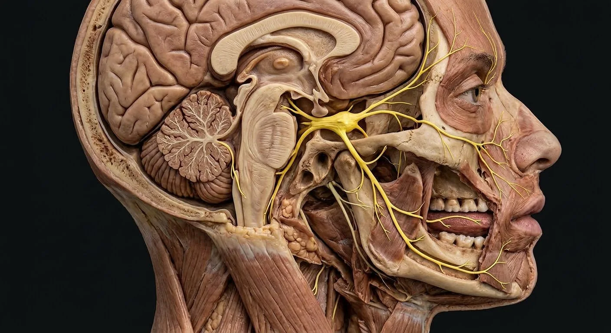
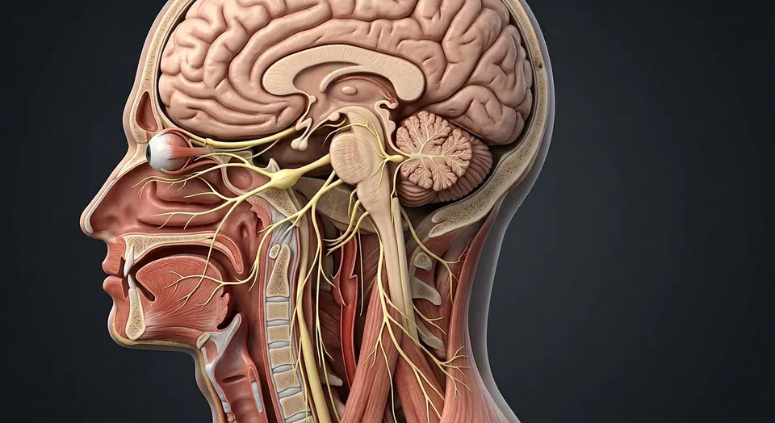

Mesencephalic trigeminal nucleusTrigeminal ganglionOphthalmic V1Frontal nerveCorneal reflex loopNasociliary nerveTrigeminal sensory rootPrincipal sensory nucleusTrigeminal motor nucleusSpinal trigeminal nucleusMaxillary V2Infraorbital nerveSuperior alveolar nervesMandibular V3Motor root of V3Buccal sensory nerveAuriculotemporal nerveInferior alveolar nerveLingual nerveMental nerve- 01Trigeminal ganglion
- 02Ophthalmic V1
- 03Maxillary V2
- 04Mandibular V3
- 05Infraorbital nerve
- 06Inferior alveolar nerve
- 07Trigeminal sensory root
- 08Frontal nerve
- 09Nasociliary nerve
- 10Superior alveolar nerves
- 11Auriculotemporal nerve
- 12Buccal sensory nerve
- 13Lingual nerve
- 14Mental nerve
- 15Motor root of V3
- 16Corneal reflex loop
- 17Principal sensory nucleus
- 18Spinal trigeminal nucleus
- 19Mesencephalic trigeminal nucleus
- 20Trigeminal motor nucleus
How this part of the body works
Most facial skin sensation travels by CN V. Ophthalmic V1 supplies forehead and cornea; maxillary V2 supplies the cheek, upper lip and upper teeth; mandibular V3 supplies lower jaw, lower teeth and general anterior tongue sensation and carries motor fibers to mastication muscles. Taste from anterior tongue is carried by facial chorda tympani joining lingual V3, not by trigeminal sensory neurons. Corneal reflex enters by V1 and blink exits by VII.
Read the anatomy, part by part
These 20 structures describe anatomy related to the chapter’s regional illustration. Each entry separates location, function and a clinical point.
Trigeminal sensory root
Large sensory root emerges from lateral pons into trigeminal cistern.
What it doesConveys facial somatic sensation centrally.
Clinical connectionBrainstem lesions can combine facial and body sensory findings.
Trigeminal ganglion
Sensory neuron cell bodies in Meckel cave; divides into V1, V2 and V3.
What it doesFirst-order facial sensory neurons.
Clinical connectionClassic site involved in trigeminal neuralgia pathways.
Ophthalmic V1
Passes superior orbital fissure into orbit; gives frontal, lacrimal and nasociliary branches.
What it doesSensation from forehead, upper lid and cornea.
Clinical connectionAfferent limb of corneal reflex.
Frontal nerve
Superior orbital branch dividing into supraorbital and supratrochlear nerves.
What it doesSensation over forehead and anterior scalp.
Clinical connectionForehead sensory loss suggests V1 pathway involvement.
Nasociliary nerve
Orbital V1 branch giving long ciliary, ethmoidal and infratrochlear fibers.
What it doesCarries corneal sensation through long ciliary nerves.
Clinical connectionCorneal anesthesia predisposes to epithelial injury.
Maxillary V2
Leaves cranial cavity via foramen rotundum to pterygopalatine fossa.
What it doesSensation to midface, upper teeth and palate.
Clinical connectionV2 neuralgia pain may localize to cheek or upper jaw.
Infraorbital nerve
Continuance of V2 through infraorbital canal to face.
What it doesSensation to lower lid, side of nose and upper lip.
Clinical connectionInfraorbital fracture may cause cheek numbness.
Superior alveolar nerves
Dental branches entering maxillary alveolar region.
What it doesGeneral sensation from upper teeth.
Clinical connectionImportant in maxillary dental anesthesia.
Mandibular V3
Sensory and motor roots unite at foramen ovale.
What it doesSensation lower face and motor to mastication.
Clinical connectionOnly trigeminal division carrying branchial motor fibers.
Auriculotemporal nerve
Runs near temporomandibular joint and parotid; conveys postganglionic fibers from otic ganglion.
What it doesSensory temple/ear and carrier for parotid secretomotor fibers.
Clinical connectionThe secretomotor origin is CN IX via otic ganglion.
Buccal sensory nerve
Long buccal branch carrying sensation from cheek mucosa and skin.
What it doesCheek general sensation.
Clinical connectionNot the buccal motor branch of facial CN VII.
Lingual nerve
Supplies general sensation to anterior tongue; joined by VII chorda tympani.
What it doesTouch/pain anterior tongue; carries taste fibers belonging to VII.
Clinical connectionAt risk in third-molar surgery.
Inferior alveolar nerve
Enters mandibular foramen and canal to lower teeth, ending as mental nerve.
What it doesLower tooth and chin sensation.
Clinical connectionMental numbness may follow mandibular injury.
Mental nerve
Terminal branch exits mental foramen.
What it doesSensation to chin and lower lip.
Clinical connectionMental foramen position matters for dental procedures.
Motor root of V3
Pons motor fibers bypass sensory ganglion then travel with V3.
What it doesControls masseter, temporalis, pterygoids and several small muscles.
Clinical connectionJaw deviates toward a weak side when opened.
Corneal reflex loop
Corneal touch → nasociliary V1 → brainstem → bilateral facial VII efferents.
What it doesProtective blink.
Clinical connectionTest sensory afferent and eyelid motor efferent separately.
Principal sensory nucleus
Pontine trigeminal nucleus receiving fine touch and pressure signals from face.
What it doesRelays discriminative facial sensation toward thalamus.
Clinical connectionBrainstem lesions can dissociate sensory modalities.
Spinal trigeminal nucleus
Nucleus extending through lower pons, medulla and upper cord.
What it doesProcesses facial pain and temperature input.
Clinical connectionLateral medullary injury may impair ipsilateral facial pain sense.
Mesencephalic trigeminal nucleus
Midbrain population containing primary sensory cell bodies for jaw proprioception.
What it doesFeeds jaw reflex and proprioceptive circuits.
Clinical connectionUnusual primary sensory neurons reside inside CNS.
Trigeminal motor nucleus
Pontine motor nucleus projecting through V3.
What it doesDrives muscles of mastication and selected first-arch muscles.
Clinical connectionUnilateral weakness causes jaw deviation toward lesion.
Five questions about Trigeminal nerve · CN V
Short answers grounded in the structures described above. Use the illustrated guide for anatomical context.
What are the three branches of the trigeminal nerve?
Ophthalmic V1, maxillary V2 and mandibular V3 supply different facial territories. V3 also carries motor fibers to muscles of mastication.
Which nerve supplies sensation to the cornea?
The ophthalmic division of the trigeminal nerve, especially through the nasociliary pathway, carries most corneal sensation.
What is the trigeminal sensory root?
Large sensory root emerges from lateral pons into trigeminal cistern. Function: Conveys facial somatic sensation centrally.
Where is the ophthalmic V1 located?
Passes superior orbital fissure into orbit; gives frontal, lacrimal and nasociliary branches. Function: Sensation from forehead, upper lid and cornea.
What is the function of the nasociliary nerve?
Function: Carries corneal sensation through long ciliary nerves. Orbital V1 branch giving long ciliary, ethmoidal and infratrochlear fibers.
Related anatomy guides
Follow these connected structures and body systems in the illustrated atlas.
 Teeth · dental anatomyFollow crown-to-root layers, 32 permanent and 20 primary tooth positions, class shapes, FDI/Universal numbers and dental sensory nerves.↗
Teeth · dental anatomyFollow crown-to-root layers, 32 permanent and 20 primary tooth positions, class shapes, FDI/Universal numbers and dental sensory nerves.↗ Skull & facial bonesName every one of the 14 facial and 8 cranial bones, with accurate visible labels and deeper views for hidden structures.↗
Skull & facial bonesName every one of the 14 facial and 8 cranial bones, with accurate visible labels and deeper views for hidden structures.↗
Cranial nervesTwelve pairs leave the brain directly — smell to tongue movement — and they are examined in strict order in every neurological exam.↗ Facial nerve · CN VIITrack facial motor branches, taste, lacrimation and salivation through the temporal bone and parotid gland.↗
Facial nerve · CN VIITrack facial motor branches, taste, lacrimation and salivation through the temporal bone and parotid gland.↗Further reading
General anatomy references and related source chapters for continued study. These links do not make the digital illustrations clinical images or certify every anatomical variant.
This educational page is not medical advice and has not undergone formal clinical peer review. Spotted an error? Contact the editor.
Open the realistic interactive plate, label lines, focus view and self-test.